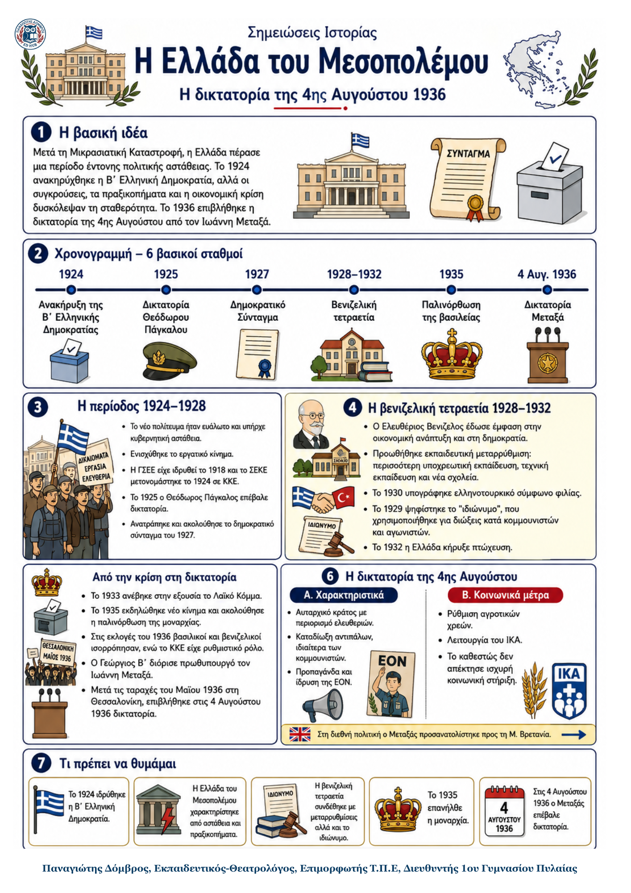

Δεν βρέθηκε η λέξη ή η φράση μέσα στην ενότητα.
1Η βασική ιδέα
Η Ελλάδα του Μεσοπολέμου γνώρισε συνεχείς πολιτικές μεταβολές. Μετά τη Μικρασιατική Καταστροφή καταργήθηκε η μοναρχία και ανακηρύχθηκε η Β΄ Ελληνική Δημοκρατία. Ωστόσο, η κυβερνητική αστάθεια, τα στρατιωτικά κινήματα και η οικονομική κρίση αποδυνάμωσαν το δημοκρατικό πολίτευμα. Η πορεία αυτή κατέληξε στην παλινόρθωση της βασιλείας και στη δικτατορία της 4ης Αυγούστου 1936.
2Ιστορικό πλαίσιο
Η Μικρασιατική Καταστροφή προκάλεσε έντονη αμφισβήτηση της μοναρχίας, στην οποία πολλοί απέδιδαν ευθύνες για την ήττα.
Στις 25 Μαρτίου 1924 η Βουλή ανακήρυξε την αβασίλευτη δημοκρατία. Η απόφαση επικυρώθηκε με δημοψήφισμα στις 13 Απριλίου.
Το νέο πολίτευμα παρέμεινε ευάλωτο, επειδή υπήρχαν συχνές κυβερνητικές αλλαγές, στρατιωτικές παρεμβάσεις και ισχυρές πολιτικές αντιθέσεις.
Παράλληλα αναπτύχθηκε το εργατικό κίνημα: ιδρύθηκαν η ΓΣΕΕ και το ΣΕΚΕ, που το 1924 μετονομάστηκε σε ΚΚΕ.
3Από τη Δημοκρατία στη δικτατορία: βασικοί σταθμοί
| Χρονιά | Γεγονός | Τι σημαίνει |
|---|---|---|
| 1924 | Β΄ Ελληνική Δημοκρατία | Καταργείται η μοναρχία και θεσπίζεται αβασίλευτο πολίτευμα. |
| 1925–1926 | Δικτατορία Πάγκαλου | Η πολιτική αστάθεια επιτρέπει στρατιωτική δικτατορία, που ανατρέπεται σύντομα. |
| 1928–1932 | Βενιζελική τετραετία | Προωθούνται οικονομική ανάπτυξη, εκπαιδευτική μεταρρύθμιση και προσέγγιση με την Τουρκία. |
| 1935 | Παλινόρθωση της βασιλείας | Ο Κονδύλης επιβάλλει δικτατορία και επαναφέρει τον Γεώργιο Β΄. |
| 4 Αυγ. 1936 | Δικτατορία Μεταξά | Καταλύεται το κοινοβουλευτικό πολίτευμα με τη στήριξη του βασιλιά. |
4Τα κύρια σημεία
Η περίοδος 1924–1928 χαρακτηρίστηκε από αστάθεια. Η σύντομη δικτατορία του Πάγκαλου ανατράπηκε και ψηφίστηκε το δημοκρατικό Σύνταγμα του 1927.
Το 1928 νίκησαν οι Φιλελεύθεροι του Βενιζέλου. Προωθήθηκαν ανάπτυξη, εκπαιδευτική μεταρρύθμιση, νέα σχολεία και το ελληνοτουρκικό σύμφωνο φιλίας του 1930.
Το «ιδιώνυμο» του 1929 χρησιμοποιήθηκε κυρίως για διώξεις κομμουνιστών και ανθρώπων που συμμετείχαν σε κοινωνικούς αγώνες.
Η παγκόσμια κρίση έπληξε την Ελλάδα. Το 1932 η χώρα κηρύχθηκε σε πτώχευση και η σύγκρουση βενιζελικών και αντιβενιζελικών οξύνθηκε.
Μετά το κίνημα του 1935 ο Κονδύλης επανέφερε τη μοναρχία. Το 1936 ο Γεώργιος Β΄ διόρισε πρωθυπουργό τον Ιωάννη Μεταξά.
5Η δικτατορία της 4ης Αυγούστου
Τον Μάιο του 1936 αιματηρές εργατικές διαδηλώσεις στη Θεσσαλονίκη φανέρωσαν την ένταση της κοινωνικής κρίσης. Ο Γεώργιος Β΄ και ο Μεταξάς επικαλέστηκαν τον «κομμουνιστικό κίνδυνο» και στις 4 Αυγούστου 1936 επέβαλαν δικτατορία, παραμονή γενικής απεργίας.
Το καθεστώς οργάνωσε ένα αυταρχικό κράτος, καταδίωξε αντιπάλους και χρησιμοποίησε προπαγάνδα και την ΕΟΝ. Παράλληλα έλαβε ορισμένα κοινωνικά μέτρα, όπως ρύθμιση αγροτικών χρεών και λειτουργία του ΙΚΑ. Δεν απέκτησε, όμως, ισχυρή μαζική στήριξη όπως ο φασισμός και ο ναζισμός.
6Ορισμοί – γλωσσάρι
| Αβασίλευτη δημοκρατία: Πολίτευμα χωρίς βασιλιά, με εκλεγμένους θεσμούς. | Ιδιώνυμο: Νόμος του 1929 που χρησιμοποιήθηκε για πολιτικές και κοινωνικές διώξεις. |
|---|---|
| Παλινόρθωση: Επαναφορά της μοναρχίας το 1935. | ΕΟΝ: Κρατική οργάνωση νεολαίας του καθεστώτος Μεταξά. |
7Τι πρέπει να θυμάμαι
- Το 1924 ανακηρύχθηκε η Β΄ Ελληνική Δημοκρατία.
- Η δημοκρατία παρέμεινε ασταθής και δέχθηκε στρατιωτικές παρεμβάσεις.
- Η βενιζελική τετραετία συνδέθηκε με μεταρρυθμίσεις αλλά και με το «ιδιώνυμο».
- Η κρίση του 1929 οδήγησε την Ελλάδα σε πτώχευση το 1932.
- Το 1935 επανήλθε η μοναρχία.
- Στις 4 Αυγούστου 1936 επιβλήθηκε η δικτατορία Μεταξά.
